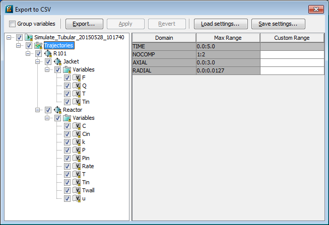
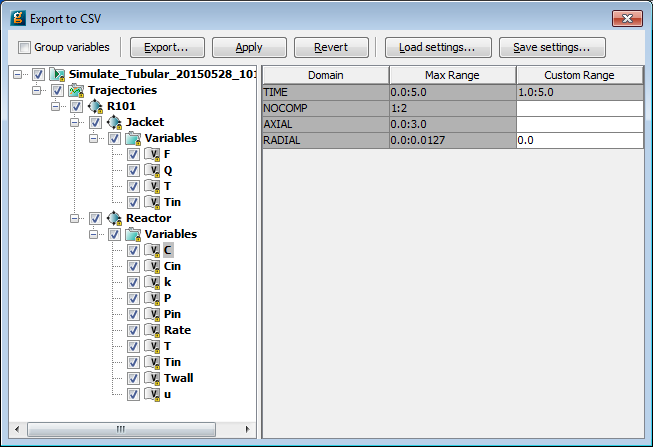

gPROMS can export the results of Simulation activities, stored in Cases, to one or more comma-separated-value (CSV) files. These files contain the results of the simulation in a simple ASCII format and therefore can easily be imported by a wide variety of applications, such as spreadsheets, mathematical software, data visualisation software etc. A dialog allows the user to specify which variables are exported, including defining subsets of arrays, so the output files can be customised quite comprehensively.
Note that if one simply wants to copy a small amount of data to another application, then it may be more efficient to copy the data directly as described in Viewing Results.
To activate the export to CSV, right-click on a Case and select the Export ... menu item and in the appearing dialog Comma separated value (.csv) result file. This will enable the dialog shown below (for the tubular reactor example). The export dialog can also be accessed by a right-click on the Trajectories or any of its sub-nodes.

Export to CSV Dialog
There are various controls on this dialog, the main two of which are the tree view in the left-hand, bottom pane, which allows the selection of variables for export; and the domain specification for the variables, which allows the user to choose which elements of a distributed variable are exported. The remaining controls, at the top of the dialog are as follows:This checkbox specifies that variables that have the same domain dependency should be exported together in the same file, so that a number of separate CSV files are created: one for each set of variables that share the same domain dependency. In this example, four files are created: one for variables that depend only on TIME; one for those that depend only on TIME and NOCOMP; one for TIME, AXIAL and RADIAL; and finally one for variables that depend on TIME, NOCOMP, AXIAL and RADIAL.
If the checkbox is unchecked, then all variables will be exported to a single CSV file.
The Export... button launches a file browser dialog so that a target directory for the CSV file(s) can be specified, along with a filename. If the Group Variables option is checked, then the filename specified will be appended with an underscore and a number to differentiate all of the files. So if the filename "Tubular" is specified, then for the above example the following four files will be created: Tubular_1.CSV, Tubular_2.CSV, Tubular_3.CSV and Tubular_4.CSV.
Once the data have been successfully exported, the current settings will be saved temporarily for the active session, just as if the Apply button (see below) had been pressed.
When the Export to CSV dialog is first launched, as described above by right-clicking on the Case, all Variables will be selected, the Group Variables checkbox will be unchecked and the Domain ranges will be at their default values (the maximum range). As soon as any change is made to any of these settings, the Apply and Revert buttons will be enabled. Pressing the Apply button will save the settings while this Case is open, so that you can close the dialog and retain the settings. Pressing the Revert button will undo all of the changes made since the last time the Apply button was pressed.
Settings saved in this way will be lost once the Case or gPROMS FormulatedProductsis closed. The same settings can be saved to a file by using the Save settings... button (see below).
If the Export to CSV dialog is closed after some changes have been made, then gPROMS FormulatedProducts will ask if these changes are to be applied. Pressing the Yes button will apply the changes (just like pressing Apply) and close the dialog; No will discard the changes and close the dialog; while Cancel will return to the dialog without applying or reverting the changes.
This button enables a file browser dialog to select a settings file to load. Once the settings file has been loaded, the current settings will be lost and replaced by the ones specified by the file. Should any of the custom ranges be different, then this will be indicated in the Custom Ranges column.
The Save settings... button saves the current settings in a file so that they can be restored at a later date to any Case of the same type. This saves repeating all of the specifications each time a new Case needs to be exported. (The Apply button only saves settings in memory for each Case individually, so they are lost whenever a Case is closed and cannot be applied to new Cases.)
The settings that are saved include which Variables are selected, the ranges of each domain over which they will be exported (specified independently for each Variable, even if they share the same domain dependency) and the status of the Group Variables checkbox.
When the Save settings... button is pressed, a file browser dialog will appear so that a target directory for the settings file can be specified. The filename may also be modified.
Once the settings have been saved to a file, they will also be saved in gPROMS FormulatedProducts and therefore the Apply and Revert buttons will be disabled.
 and
and  icons respectively, and select which Variables are to be included by checking (or unchecking) the box
next to their name.
icons respectively, and select which Variables are to be included by checking (or unchecking) the box
next to their name.Note that if you only want to export a few variables, then it may be more economical to invoke the Export to CSV dialog in a different manner: instead of right-clicking on the Case, browse through the Trajectories branch of the Case and select the Variable or Model instance whose data you want to export, then right-click on it and select Export to CSV... from the menu. This will launch the Export to CSV dialog with only the selected Variable checked; if a Model instance was selected, then all of the Variables within that Model instance and its sub Models will be checked.
These different ways of opening the Export to CSV dialog may seem a little confusing. To summarise:
| Entity Right-Clicked | First Time | Subsequent Times |
|---|---|---|
| Case |
| If the Apply button has been used to save any settings, then all of these will be restored, including Variable selections; otherwise the behaviour will be as the first time. |
| Trajectories |
|
|
| Model instance |
|
|
| Variable |
|
|
By default, all elements of a distributed Variable will be exported to the CSV file. To modify this, select a Variable by left clicking on its name. This will then populate the table in the right-hand pane. This shows a list of domains (both discrete and continuous) over which the Variable is distributed, their maximum ranges and a custom range. If this custom range is left blank, then all elements of that range will be included in the exported data. To modify this, simply left click on the cell that defines the custom range for the desired domain and enter a value using the same format in which the max range is given. For example, suppose in the Tubular Reactor example, that we only want to export values of the concentration for the last 4 seconds of simulation. This can be achieved by typing
1.0:5.0in the custom-range cell.
One might go further and only desire the values of a variable at a particular point in the domain: this can be achieved simply by specifying a single value in the custom domain. So to see only the values of the concentration for RADIAL = 0, simply enter 0 in the custom-range cell for the RADIAL domain. Both of these specifications are shown in the figure below.

Example of Custom Range specification
Multiple ranges and values can also be specified, by separating them with commas. Some examples are shown below.
0.0:1.0,2.0,3.0:4.0 1,2,4:10 "H2","N2" "H2":"CH4"
The first line illustrates the specification of ranges and points together for a continuous domain. The second line shows a similar specification
for an integer domain. The third and fourth lines illustrate how to specify ranges for Variables defined over Ordered Sets. The first of these lines indicates that the Variable should be exported for only two of the elements in
the Ordered Set; the last line specifies a range of elements: all elements between and including "H2" and
"CH4".
The dialog checks to make sure that the range specifications are correctly formatted and within the allowed maximum range. Should a mistake be made when entering a custom range, the cell border will turn red and the new range will not be accepted until the mistake is corrected. (Spaces between commas are ignored and there is some flexibility when entering numbers (e.g. if one types 5 referring to a continuous domain, then this will be converted to 5.0), but it is necessary to adhere to the general format.)
Note that once a custom range has been specified for a Variable, its name will appear in bold face to indicate that it is not at the default value (the whole range), as do all of the section headings that contain it. Clicking on one of these section headings allows one to specify the domain ranges of all of its entities at the same time. Starting with the above example, suppose we wanted now to set the ranges of all of the Variables in the Reactor Model instance to the same value. First, we would left-click on either the Variables heading (within the Reactor Model - since there may be other Model instances, all of which will contain a Variables heading) or on the Reactor heading. Once the heading is selected, the common ranges will be shown in the cells on the right. In this case, the top and bottom cells will be showing <different> to indicate that the ranges of the Variables are not all the same. To set them all to the same value, simply enter the ranges in the cells as before.